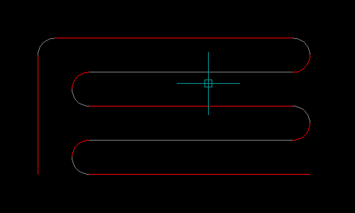
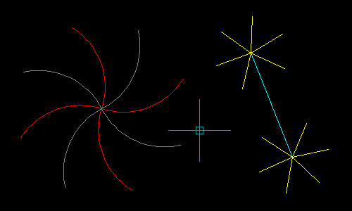

Chain Selection
This page is delivered for consistency purposes only, as part of the LeeMac sample module of DynALisp, which shows how DynALisp turns existing AutoLISP programs into a module. The program and its description are the work of Lee Mac, who keeps all the credit for them. The original page, with the latest version, is on Lee Mac's website: https://lee-mac.com/chainsel.html
See also Chain Length.
| Function Syntax | LM-ChainSelection – original syntax: cs (see aliases) |
| Current Version | 1.1 |
| Compatible with AutoCAD for Mac? | No |
| Compatible with AutoCAD LT? | Yes |
| Original Page | lee-mac.com/chainsel.html |
Program Description
This program prompts the user to select an object and generates a 'chain selection' of all objects sharing endpoints with objects in the accumulative selection.
To explain further: when prompted, the user may select either a Line, Circular or Elliptical Arc, Open LWPolyline or Spline, or a 2D Polyline. The program will then return a selection of all objects whose endpoints coincide with the endpoints of the selected object, including those objects whose endpoints coincide with any object already in the selection, forming a 'chain' of selected objects.
The resulting selection will exclude objects residing on frozen or locked layers, or layers that are turned off.
Examples of Usage


See also Chain Length.
Bundled program notes
;;------------------------=={ Chain Selection }==-----------------------;;
;; ;;
;; This program prompts the user to select an object and generates a ;;
;; 'chain selection' of all objects sharing endpoints with objects in ;;
;; the accumulative selection. ;;
;; ;;
;; To explain further: when prompted, the user may select either a ;;
;; Line, Circular or Elliptical Arc, Open LWPolyline or Spline, or a ;;
;; 2D Polyline. The program will then return a selection of all ;;
;; objects whose endpoints coincide with the endpoints of the selected ;;
;; object, including those objects whose endpoints coincide with any ;;
;; object already in the selection, forming a 'chain' of selected ;;
;; objects. ;;
;;----------------------------------------------------------------------;;
;; Author: Lee Mac, Copyright © 2012 - www.lee-mac.com ;;
;;----------------------------------------------------------------------;;
;; Version 1.0 - 2012-11-07 ;;
;; ;;
;; - First release. ;;
;;----------------------------------------------------------------------;;
;; Version 1.1 - 2019-11-24 ;;
;; ;;
;; - Program modified to exclude objects residing on frozen or locked ;;
;; layers, or on layers that are turned off. ;;
;;----------------------------------------------------------------------;;
Command Names And Aliases
As in every DynALisp module, each program of this sample module has one main command, named LM-*, and the original command names of Lee Mac's page are kept as its aliases: they run the same command, and can be added, renamed or removed in Dyl-Suite (saved in Resources\Aliases.csv).
| Command | Aliases | Name |
|---|---|---|
| LM-ChainSelection | CS | Chain Selection |